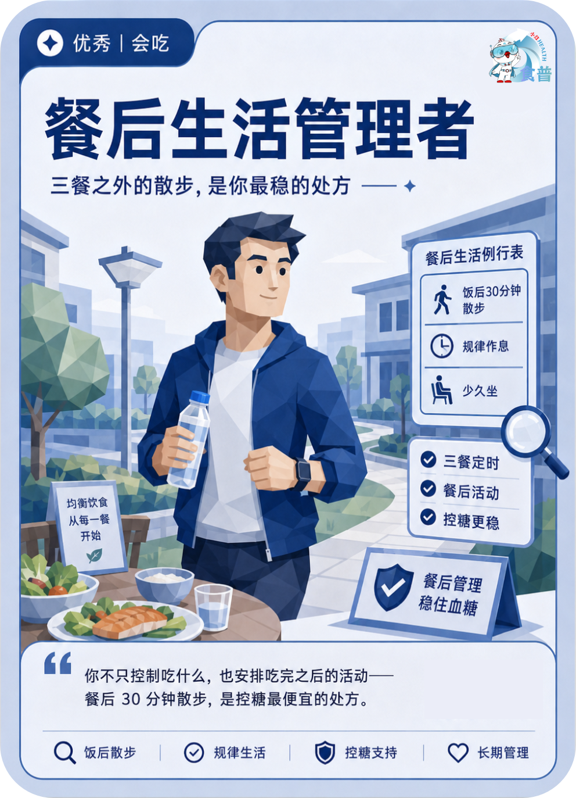

慢病管理人群
优秀
会吃
C04
餐后生活管理者
三餐之外的散步,是你最稳的处方
你不只控制吃什么,也安排吃完之后的活动——餐后 30 分钟散步,是控糖最便宜的处方。
手机端可点击“打开原图”后长按图片保存；也可以直接长按上方图卡保存。

三餐之外的散步,是你最稳的处方
你不只控制吃什么,也安排吃完之后的活动——餐后 30 分钟散步,是控糖最便宜的处方。
手机端可点击“打开原图”后长按图片保存；也可以直接长按上方图卡保存。